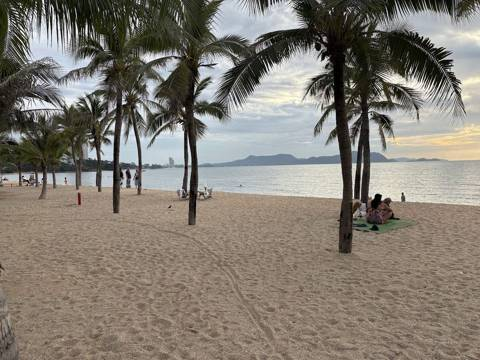
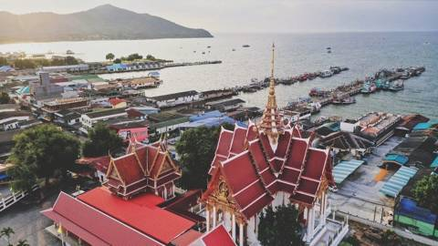
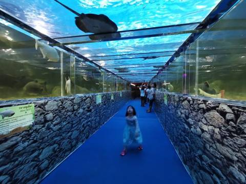
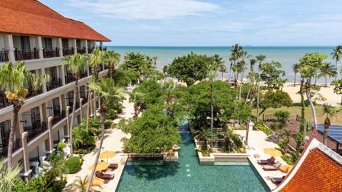
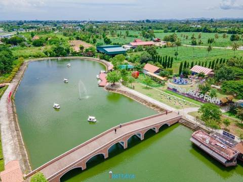
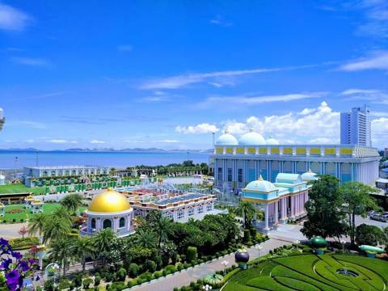
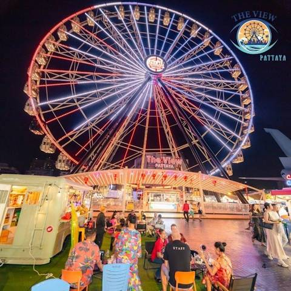
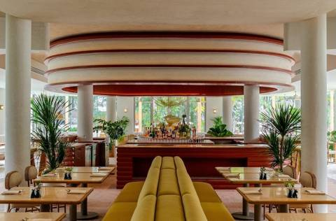
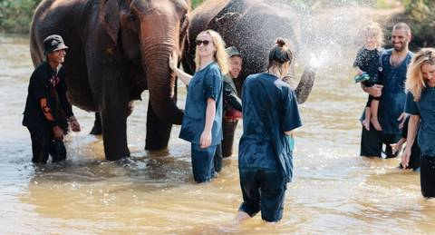
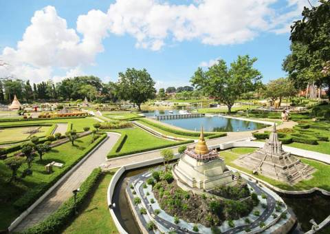

Сегодня
⭐ Избранное
Быстрый доступ
…
 вт 20.10сегодня
вт 20.10сегодня
Вылет
Иркутск → Пекин, ночь в отеле у аэропорта
▾
🧭 Пекин: схема аэропорта и инструкция →Вылет
Иркутск → Пекин, ночь в отеле у аэропорта
🎒 Взять с собой: паспорта, юани наличными на Пекин
- 15:00 Выезд в аэропорт Иркутска (рейс CA870 в 17:30)
- 20:25 Пекин, терминал 3. Граница Китая, получаем весь багаж (билеты раздельные)
- 21:15 Ужин в терминале 3: McDonald's на 2 этаже или круглосуточные кафе на 5 этаже — варианты
- 22:00 Шаттл в отель ELONG R.YUN (заказан через WeChat ELONGHOTEL001), спать
👶 Перед полётом дать поспать днём дома: ночь будет короткой. В самолёт — перекус, вода и любимая игрушка.
💡 Юани держать мелкими купюрами: в терминале 3 так быстрее рассчитаться за ужин.
🍽 Где поесть и что заказать
 ср 21.10сегодня
ср 21.10сегодня
Перелёт и заселение
Пекин → Бангкок → Паттайя, первый вечер у бассейна
▾
🧭 Пекин: схема аэропорта и инструкция →Перелёт и заселение
Пекин → Бангкок → Паттайя, первый вечер у бассейна
🎒 Взять с собой: TDAC (QR-код) в телефоне у каждого
- 04:20 Подъём, собираемся
- 05:00 Шаттл отеля в терминал 2 (не в терминал 3!). Накануне спросить на ресепшене, есть ли шаттл в 05:00; если только в 05:30 — заказать такси: паспортный контроль на вылет из Китая бывает долгим
- 05:30 Регистрация HU429, завтрак в терминале 2 после досмотра
- 08:15 Вылет в Бангкок
- 12:20 Суварнабхуми: паспортный контроль (TDAC заполнен заранее), багаж
- 13:30 Трансфер ждёт в зале прилёта (2 этаж) с табличкой — детали в приложении Trip.com. Дорога ≈ 1,5–2 часа по трассе №7, можно остановиться на заправке — подробнее
- ≈ 15:00 Заселение в Mövenpick. Сначала дневной сон Нине — ночью спали всего ≈ 6 часов
- 16:00 «Шоколадный час» в лобби — бесплатно 🍫 (кто не спит)
- 17:00 Бассейн и детская площадка — по самочувствию
- 18:00 Ужин в Praneat (≈ 500 м, через оживлённую Сукхумвит — лучше на такси; по свежим данным работает до 22:00)
👶 Ночью спали мало: дневной сон сразу после заселения важнее бассейна; лечь пораньше, к 20:00.
💡 В дороге из аэропорта попросить водителя остановиться на заправке: туалет, вода и мороженое — передышка на полпути.
🍽 Где поесть и что заказать
 Praneat ужинкарри с крабом и рисовой лапшой, салат из помело с креветками, омлет с крабом; Нине — омлет с рисом, карри просить неострымсамый близкий хороший ресторан; по свежим данным работает до 22:00, можно не спешить
Praneat ужинкарри с крабом и рисовой лапшой, салат из помело с креветками, омлет с крабом; Нине — омлет с рисом, карри просить неострымсамый близкий хороший ресторан; по свежим данным работает до 22:00, можно не спешить Lake House ужинсатай из курицы, карри пананг; Нине — сатай и бананы в кокосовом молоке3–5 минут, тихо у озера — если Praneat не хочется; закрывается в 19:30
Lake House ужинсатай из курицы, карри пананг; Нине — сатай и бананы в кокосовом молоке3–5 минут, тихо у озера — если Praneat не хочется; закрывается в 19:30 Twist перекусчто-то лёгкое в номер или в ресторане отеля: жареный рис, фруктыесли все без сил и никуда ехать не хочется
Twist перекусчто-то лёгкое в номер или в ресторане отеля: жареный рис, фруктыесли все без сил и никуда ехать не хочется☔ Если ливень
Если льёт — ужин в отеле (Twist), а Нине детский клуб прямо в отеле.
🌙 Вечером
 чт 22.10сегодня
чт 22.10сегодня
Остров Ко Лан
Едем в будний четверг: в праздник 23.10 на острове будет толпа
▾
Остров Ко Лан
Едем в будний четверг: в праздник 23.10 на острове будет толпа
🎒 Взять с собой: детский жилет; наличные мелкими на паром и сонгтэо
- 07:00 Завтрак, собрать: детский жилет, крем, панамки, наличные
- 07:45 До пирса Бали Хай на Bolt XL (≈ 25–30 мин), к 08:15 на пирсе — паром может уйти раньше, если заполнится. Детского кресла в такси нет: Нину держать на руках или взять свой дорожный бустер
- 09:00 Паром до пляжа Тавэн (≈ 30–40 бат, ≈ 35–45 мин). Билеты — только в кассе на пирсе
- 09:50 Сонгтэо до пляжа Самэ (≈ 30–60 бат с человека) — про остров
- 10:00 Пляж Самэ: купаемся в зоне за буйками, лежаки. Гидроциклы, банан и парасейлинг не берём — страховка это не покрывает
- 12:00 Обед в кафе на пляже: креветки на гриле, жареный рис Нине
- 13:00 Дневной сон в тени на лежаке
- 15:15 Сонгтэо обратно на Тавэн
- 16:00 Паром в Паттайю (последний из Тавэна ≈ 17:00)
- 16:45 С пирса Бали Хай на Bolt (≈ 10 мин) — ранний ужин в Cabbages & Condoms: сад на берегу, том ям, рис в ананасе (Нине — рис в ананасе). Нет сил — сразу Bolt XL в отель (≈ 30 мин) и ужин у отеля
- 18:30 Bolt XL в отель (≈ 30 мин)
- 19:00 Принимаем машину у отеля. Заранее договориться с прокатом: привезти к 19:00, не к 18:00 — тогда ужин без спешки. Проверить, что в договор вписан второй водитель: 27–29.10 за рулём Софья или Алексей
👶 Жилет надеть ещё на пирсе. Коляску не брать — по песку и в сонгтэо только переноска. Панамка, крем каждые 2 часа, купаться до 11:00, пока нет волны.
💡 На пирс приходить за 30–60 минут: заполненный паром может уйти раньше расписания.
🍽 Где поесть и что заказать
 Кафе на пляже Самэ перекусCloud 9 Cafe на самом пляже: кофе взрослым, фруктовый шейк и нарезка Нинеработает с 9:00 — удобно сразу после сонгтэо, пока не жарко
Кафе на пляже Самэ перекусCloud 9 Cafe на самом пляже: кофе взрослым, фруктовый шейк и нарезка Нинеработает с 9:00 — удобно сразу после сонгтэо, пока не жарко The Chocolate Factory перекусшоколадный купол взрослым, мороженое или шоколадный напиток Нинетам же, на Пратамнаке, — если хочется только десерта по дороге в отель
The Chocolate Factory перекусшоколадный купол взрослым, мороженое или шоколадный напиток Нинетам же, на Пратамнаке, — если хочется только десерта по дороге в отель Круа Джэм Пупен ужинкраб в жёлтом карри, сом там (неострый); Нине — жареный рис и омлет8–10 минут от отеля, если ужинаем уже после приёма машины
Круа Джэм Пупен ужинкраб в жёлтом карри, сом там (неострый); Нине — жареный рис и омлет8–10 минут от отеля, если ужинаем уже после приёма машины🔄 Если хочется другого

Пляж Бан Ампхур≈ 10 мин на Bolt (машины ещё нет), тень от пальм и площадка — если на остров нет сил
Пирс Бангсарай≈ 15 мин на Bolt (машины ещё нет), лодки и рыбаки — спокойная замена острову
Monster Aquariumесли на море сильная волна: рыбы и козочки под крышей, ≈ 25 мин на Bolt☔ Если ливень
Машины ещё нет — всё на Bolt XL. Если утром льёт — остров перенести, а сегодня Underwater World (кормление рыб в 10:30–11:30) или Kidzooona с 11:00. Ливень днём на острове — переждать под навесом кафе на Самэ и уйти на паром пораньше.
🌙 Вечером

Пляж у отеляпосле острова никуда не ехать: прогулка по пляжу у отеля на закате Let's Relax Spa — в нашем отелевзрослым по очереди — массаж стоп в отеле после дня на солнце
Let's Relax Spa — в нашем отелевзрослым по очереди — массаж стоп в отеле после дня на солнце📍 Рядом ещё
 пт 23.10сегодня
пт 23.10сегодня
Спокойный день + ночной рынок
Праздник (день Чулалонгкорна) — много местных, поэтому отдыхаем у отеля
▾
Спокойный день + ночной рынок
Праздник (день Чулалонгкорна) — много местных, поэтому отдыхаем у отеля
- 08:30 Big C / Lotus's на машине к открытию — у тайцев длинные выходные, к обеду очереди: вода, подгузники, фрукты, детское
- 11:00 Бассейн, детский клуб Little Birds (с 2 лет, бесплатно)
- 12:30 Обед у отеля, дневной сон
- 16:00 «Шоколадный час» 🍫
- 17:30 Ночной рынок Джомтьена (≈ 15–20 мин, каждый день ≈ 17:00–23:00). На Тепразит в праздник не едем: толпа и нет парковки, он будет 30.10. Ужинаем на рынке: шашлычки, роти, манго с клейким рисом
👶 На рынке узко — переноска вместо коляски. Держать за руку у грилей и у аттракционов.
💡 В праздник на Тепразите толпа и нет парковки, поэтому сегодня рынок Джомтьена: он ближе и работает каждый день. Если у рынка негде встать — Bolt.
🍽 Где поесть и что заказать
 А-ля Кампань обедв пекарне круассаны, в Tea Factory сконы и кокосовый торт; Нине — паста или жареный рис из кафе5–7 минут: обед в 12:00, потом полчаса на ферме и площадке — и спать
А-ля Кампань обедв пекарне круассаны, в Tea Factory сконы и кокосовый торт; Нине — паста или жареный рис из кафе5–7 минут: обед в 12:00, потом полчаса на ферме и площадке — и спать Jomtien Night Market ужиншашлычки, пад тай при вас, манго с клейким рисом; Нине — му пинг с клейким рисом и роти с бананомглавный ужин дня, ≈ 15–20 минут, работает каждый день
Jomtien Night Market ужиншашлычки, пад тай при вас, манго с клейким рисом; Нине — му пинг с клейким рисом и роти с бананомглавный ужин дня, ≈ 15–20 минут, работает каждый день🔄 Если хочется другого

Овечья ферма Family Parkутром вместо магазина: кормить ягнят из бутылочки, ехать к открытиюПляж Бан Ампхурсменить бассейн на море в 10 минутах Рынок Тепразитпо пятницам работает полностью, но в праздник там толпа и нет парковки — только на Bolt; в плане он стоит на 30.10
Рынок Тепразитпо пятницам работает полностью, но в праздник там толпа и нет парковки — только на Bolt; в плане он стоит на 30.10☔ Если ливень
Ливень днём — детский клуб или игровая на втором этаже Back to School (5–7 мин). Если льёт вечером — рынок отменить, ужин в отеле.
🌙 Вечером
📍 Рядом ещё

 сб 24.10сегодня
сб 24.10сегодня
Тропический сад Нонг Нуч
Сад, динозавры, шоу; вечером буфет в отеле и огненное шоу
▾
Тропический сад Нонг Нуч
Сад, динозавры, шоу; вечером буфет в отеле и огненное шоу
- 08:30 Выезд (≈ 15 мин). Билеты лучше купить онлайн — дешевле
- 09:00 Sky Walk и Французский сад, пока не жарко — что смотреть
- 10:30 Шоу (тайское + слоны): прийти за 15 минут, сесть с краю. Расписание шоу проверить на сайте парка
- 11:15 Долина динозавров (Нине понравится) или по парку на автобусе
- 12:30 Обед в парке, обратно в отель — сон
- 15:30 Бассейн
- 18:00 Буфет Fisherman's BBQ в отеле: дети до 6 лет бесплатно, бронь заранее
- 20:30 🔥 Огненное шоу на пляже отеля — по желанию, если Нина не устала
👶 С 11 до 14 в саду почти нет тени: самые длинные прогулки — до обеда, дальше автобус по парку. Коляску брать.
💡 Длинные выходные (праздник 23.10 + суббота) — в саду много групп; на шоу в 10:30 толпа — прийти пораньше. Следующее только в 13:30, это время сна.
🍽 Где поесть и что заказать
 Кафе-карусель Merry Go Round перекусгреческий йогурт с топпингами, мороженое-фигурки Нинепо дороге назад от Нонг Нуча, 10–15 минут от отеля; часть блюд готовят долго — брать десерты
Кафе-карусель Merry Go Round перекусгреческий йогурт с топпингами, мороженое-фигурки Нинепо дороге назад от Нонг Нуча, 10–15 минут от отеля; часть блюд готовят долго — брать десерты Ферма Кун Ин обедомлет со свежими яйцами, мини-пирожные, зелёный смузи; Нине — омлет и кормить уток10 минут от Нонг Нуча — если в парке еда не понравится; по субботам открыто до 17:00Twist ужинна буфете: креветки и голубой краб на гриле, сашими, мороженое Mövenpick; Нине — рис, рыба с гриля, мороженоесуббота — единственный буфетный день; Нине бесплатно
Ферма Кун Ин обедомлет со свежими яйцами, мини-пирожные, зелёный смузи; Нине — омлет и кормить уток10 минут от Нонг Нуча — если в парке еда не понравится; по субботам открыто до 17:00Twist ужинна буфете: креветки и голубой краб на гриле, сашими, мороженое Mövenpick; Нине — рис, рыба с гриля, мороженоесуббота — единственный буфетный день; Нине бесплатно🔄 Если хочется другого
☔ Если ливень
Ливень с утра — Monster Aquarium (рыбы и козочки под крышей) или Вихан Сиен — часть залов в тени, 10 минут от Нонг Нуча. Короткий дождь в саду — переждать на шоу под крышей.
🌙 Вечером
📍 Рядом ещё
 вс 25.10сегодня
вс 25.10сегодня
Храм Истины и закат
Храм утром, обед в Наклуа, закат на Пратамнаке
▾
Храм Истины и закат
Храм утром, обед в Наклуа, закат на Пратамнаке
🎒 Взять с собой: закрытые плечи и колени у всех — утром в храме и вечером на Big Buddha
- 07:50 Выезд (≈ 35–40 мин). Плечи и колени закрыты, эргорюкзак вместо коляски
- 08:30 Храм Истины до прихода групп, бесплатная экскурсия на русском
- 11:00 Обед в Moom Aroi (5 мин от храма, открывается в 10:00–10:30; шоу в храме в 11:30 пропускаем) — днём спокойно и столики у воды. Или рыбный рынок Лан Пхо рядом: выбрать рыбу, и тут же приготовят (лучший выбор утром, к обеду меньше)
- 13:00 Отель, сон
- 16:00 «Шоколадный час» 🍫
- 17:15 Big Buddha и смотровая — закат ≈ 17:55. У храма снова нужны закрытые плечи и колени
- 18:30 Ужин: Sky Gallery (бронь; терраса открытая — если льёт, The Chocolate Factory рядом, там зал) или у отеля
- 20:30 🔥 Огненное шоу на пляже отеля — по желанию
👶 Обратно из Наклуа ≈ 40 минут — она почти наверняка уснёт в машине; не будите, переложите в номере. На закат возьмите репеллент и кофточку с рукавами.
💡 Big Buddha открыт до 22:00, огни города после заката не хуже самого заката — можно не спешить к 17:55. У Храма Истины теперь есть и вечерняя подсветка 18:20–20:30.
🍽 Где поесть и что заказать
 Moom Aroi обеджареный рис с крабом, кальмар в солёном желтке, сибас целиком во фритюре. Нине — жареный рис и кусочки рыбы без соуса, просить «май пхет»днём тихо и есть столики у воды; открывается уже в 10:00–10:30
Moom Aroi обеджареный рис с крабом, кальмар в солёном желтке, сибас целиком во фритюре. Нине — жареный рис и кусочки рыбы без соуса, просить «май пхет»днём тихо и есть столики у воды; открывается уже в 10:00–10:30 So Tai Seafood обедгребешки, запечённые с сыром, яйцо на пару с морепродуктами, рыбные котлетки. Нине — яйцо на пару и гребешки с сыромсемейная рыбная кухня рядом с Лан Пхо, дешевле Moom Aroi; приходить к открытию в 11:30, мест мало
So Tai Seafood обедгребешки, запечённые с сыром, яйцо на пару с морепродуктами, рыбные котлетки. Нине — яйцо на пару и гребешки с сыромсемейная рыбная кухня рядом с Лан Пхо, дешевле Moom Aroi; приходить к открытию в 11:30, мест мало Cabbages & Condoms ужинтом ям кунг, рис в ананасе, жареный рис с кокосом. Нине — рис в ананасезамена Sky Gallery: тоже закат на Пратамнаке, а еду хвалят больше и выходит дешевлеThe Chocolate Factory перекусшоколадный купол и конфеты с витрины. Нине — шоколадный напиток или мороженоев одном комплексе со Sky Gallery — десерт после заката, есть зал с кондиционером
Cabbages & Condoms ужинтом ям кунг, рис в ананасе, жареный рис с кокосом. Нине — рис в ананасезамена Sky Gallery: тоже закат на Пратамнаке, а еду хвалят больше и выходит дешевлеThe Chocolate Factory перекусшоколадный купол и конфеты с витрины. Нине — шоколадный напиток или мороженоев одном комплексе со Sky Gallery — десерт после заката, есть зал с кондиционером🔄 Если хочется другого
 Кафе с кроликами вместо долгого храмаесли Нина устала: кролики, батут, горка и обед в одном месте; тоже Наклуа, с 11:00
Кафе с кроликами вместо долгого храмаесли Нина устала: кролики, батут, горка и обед в одном месте; тоже Наклуа, с 11:00
Дворец Сукхавадитоже в Наклуа и красиво для фото, но дорого (≈ 500 бат) и мало тени
Колесо The View вместо Big Buddhaзакат с высоты 100 м в прохладной кабине, Нине бесплатно, закрытые плечи не нужны☔ Если ливень
Храм Истины утром — ехать в любом случае, внутри есть где переждать. Если льёт к вечеру, терраса Sky Gallery открытая — лучше ужин в зале The Chocolate Factory, а Big Buddha заменить на Kidzooona в Central (до 21:00).
🌙 Вечером
📍 Рядом ещё


 пн 26.10сегодня
пн 26.10сегодня
Плавучий рынок
Утром всей семьёй на рынок, потом Денис работает, остальные — бассейн и детский клуб
💻 Денис: утром с семьёй, 11:00–19:00 работает
▾
Плавучий рынок
Утром всей семьёй на рынок, потом Денис работает, остальные — бассейн и детский клуб
💻 Денис: утром с семьёй, 11:00–19:00 работает
- 08:45 Выезд всей семьёй (≈ 15 мин)
- 09:00 Плавучий рынок к открытию: еда с лодок, кокосовое мороженое
- 10:30 Обратно; в 11:00 Денис садится работать
- 11:00 Семья: бассейн, детский клуб, обед, сон
- 16:00 «Шоколадный час» 🍫
- 19:15 Ужин всем вместе: Glass House на пляже (≈ 19:30) или у отеля
👶 На мостках рынка коляска неудобна — переноска; к 10:30 жарко, так что дорога назад — хорошее время для короткого сна.
💡 Короткая прогулка на лодке (≈ 200 бат, 30 мин) — самое интересное для Нины; бесплатное шоу начинается в 10:00 — как раз перед отъездом.
🍽 Где поесть и что заказать
Плавучий рынок перекуслодочная лапша, мини-ананасы, кокосовое мороженое. Нине — кокосовое мороженое и манго с клейким рисомеда с лодок — лучшее на рынке; брать сразу у открытия, пока не жаркоLake House обедсатай из курицы, карри пананг, бананы в кокосовом молоке. Нине — сатай с рисом и бананы3–5 минут от отеля, тихо у озера с яхтами — обед без Дениса без долгой дороги Прича Сифуд ужинкальмар в солёном яйце, сибас с рыбным соусом, краб на пару. Нине — краб на пару с рисом, просить «май пхет»замена Glass House: 5 минут от отеля, после 19:30 легко с парковкой, Нине — живые крабы в аквариумах
Прича Сифуд ужинкальмар в солёном яйце, сибас с рыбным соусом, краб на пару. Нине — краб на пару с рисом, просить «май пхет»замена Glass House: 5 минут от отеля, после 19:30 легко с парковкой, Нине — живые крабы в аквариумах🔄 Если хочется другого
А-ля Кампань — ферма в 5 минутахбез дороги: кормить животных, собирать яйца, площадка; ферма с 10:00 — можно и днём без Дениса☔ Если ливень
Ливень с утра — на мокрых мостках рынка с Ниной скользко, лучше Monster Aquarium (с 9:00, рыбы и козочки под крышей). Днём, пока Денис работает, — детский клуб или игровая на втором этаже Back to School.
🌙 Вечером

Короткий вечер рядом с отелемесли Алексей и Елена посидят с Ниной — Денису и Софье два часа вдвоём рядом с отелем после работыLet's Relax Spa — в нашем отелемассаж прямо в отеле до 23:00 — по очереди, пока Нина спит📍 Рядом ещё
 вт 27.10сегодня
вт 27.10сегодня
Зоопарк Кхао Кхео
Му Денг, жирафы с рук, слоны — едем к открытию
💻 Денис: работает 11:00–19:00, вечером ужин вместе
▾
Зоопарк Кхао Кхео
Му Денг, жирафы с рук, слоны — едем к открытию
💻 Денис: работает 11:00–19:00, вечером ужин вместе
🎒 Взять с собой: паспорт — если берёте гольф-кар (залог)
- 07:30 Выезд (≈ 45–60 мин), за рулём Софья или Алексей. Паспорт — если возьмёте гольф-кар
- 08:30 Вход; въезжаем на машине (80 бат), сразу к Му Денг — что смотреть
- 09:30 Кормление жирафов с рук
- 10:00 Парад пингвинов
- 11:00 Купание слонов
- 12:00 Обед (можно свой), выезд — Нина спит в машине (≈ 1 час)
- 13:00 Отель. Если не доспала — досыпает в номере; бассейн после 15:30
- 19:15 Выезд, ≈ 19:30 ужин вместе — Pupen Seafood
👶 Возьмите гольф-кар: территория огромная, а жара к 11:00 сильная. По дороге назад не останавливайтесь — пусть спит в машине, у Му Денг толпа, лучше держать её на руках.
💡 К Му Денг пускают группами на ≈ 5 минут — к ней первой, пока она в воде. Взрослый-иностранец 350 бат (онлайн дешевле), Нине ниже 90 см бесплатно; остров лемуров — 50 бат.
🍽 Где поесть и что заказать
 Pupen Seafood ужинголубой краб в жёлтом карри, жареный рис с крабом, рис в ананасе. Нине — рис в ананасе и рыба на гриле, просить «май пхет»подают быстро, часто за 15 минут — то что надо после раннего подъёмаКруа Джэм Пупен ужинкраб в жёлтом карри, сом там. Нине — жареный рис и омлеттихая местная замена шумному Pupen, 8–10 мин, до 21:00
Pupen Seafood ужинголубой краб в жёлтом карри, жареный рис с крабом, рис в ананасе. Нине — рис в ананасе и рыба на гриле, просить «май пхет»подают быстро, часто за 15 минут — то что надо после раннего подъёмаКруа Джэм Пупен ужинкраб в жёлтом карри, сом там. Нине — жареный рис и омлеттихая местная замена шумному Pupen, 8–10 мин, до 21:00 Treehouse Garden Cafe перекускофе и торты взрослым, Нине — мягкие неострые блюда или тортпосле дневного сна: сад с детской площадкой и тенистая парковка, 12–15 мин, до 20:00
Treehouse Garden Cafe перекускофе и торты взрослым, Нине — мягкие неострые блюда или тортпосле дневного сна: сад с детской площадкой и тенистая парковка, 12–15 мин, до 20:00🔄 Если хочется другого

Заповедник слоновесли главное — слоны: ≈ 3 ч, без катания и шоу☔ Если ливень
Зоопарк под открытым небом, но ливни обычно после 14:00 — утром ехать. Если льёт с самого утра — Monster Aquarium или Frost, а когда стихнет — овечья ферма в 1–2 минутах от него.
🌙 Вечером
 Sereia Thai Coastal Grillесли на Pupen нет сил ехать: морская кухня Чонбури в 5–7 минутах, до 22:30, зал крытый
Sereia Thai Coastal Grillесли на Pupen нет сил ехать: морская кухня Чонбури в 5–7 минутах, до 22:30, зал крытый D.K MassageАлексею и Елене массаж стоп после ужина — по пути от Pupen, до 23:00
D.K MassageАлексею и Елене массаж стоп после ужина — по пути от Pupen, до 23:00📍 Рядом ещё
 ср 28.10сегодня
ср 28.10сегодня
Пляж Сай Кэу
Самый чистый пляж рядом — на территории ВМФ. Не забыть паспорта!
💻 Денис: работает 11:00–19:00, вечером ужин вместе
▾
Пляж Сай Кэу
Самый чистый пляж рядом — на территории ВМФ. Не забыть паспорта!
💻 Денис: работает 11:00–19:00, вечером ужин вместе
🎒 Взять с собой: паспорта всем — без них не пустят на базу ВМФ
- 08:00 Выезд (≈ 35–40 мин), за рулём Софья или Алексей. Паспорта обязательно
- 08:45 КПП (иностранец 100 бат; Нина, скорее всего, бесплатно — уточнить на КПП), пляж Сай Кэу: мелко, белый песок. У парковки обезьяны: не кормить, пакеты с едой не показывать, машину закрывать
- 11:30 Обед прямо на пляже в Blue Sea Cafe или по дороге в Samaesarn Kitchen / Puen Talay над водой (≈ 25 мин от пляжа, тогда в отеле позже)
- 13:00 Обратно, сон (иностранцам выехать из зоны до 18:00)
- 19:15 Ужин всем вместе у отеля или на ночном рынке Джомтьена (каждый день ≈ 17:00–23:00, ≈ 15–20 мин на машине). Terminal 21 далеко (≈ 40–50 мин) — его оставляем на дождь
👶 Вода мелкая — панама, нарукавники и крем. У парковки обезьяны: Нину держать на руках, еду ей в руки не давать. Выехать к 13:00 — уснёт в машине.
💡 На КПП оставляют документ — не забудьте забрать на выезде. Соседний пляж Тоей Нгам иностранцев не пускает — ехать только на Сай Кэу.
🍽 Где поесть и что заказать
 Blue Sea Cafe перекуспростая тайская еда и фруктовые шейки. Нине — кай чжеу (омлет) с рисомпрямо на пляже, 4,9 в Google — можно не уходить с песка; синие зонтики в самом конце пляжа
Blue Sea Cafe перекуспростая тайская еда и фруктовые шейки. Нине — кай чжеу (омлет) с рисомпрямо на пляже, 4,9 в Google — можно не уходить с песка; синие зонтики в самом конце пляжа Samaesarn Kitchen Seafood обедкэнг сом, раки-богомолы в чесночном масле, рис с крабом. Нине — рис с крабоместь зал с кондиционером и веранда с ветерком; в будни не так людно
Samaesarn Kitchen Seafood обедкэнг сом, раки-богомолы в чесночном масле, рис с крабом. Нине — рис с крабоместь зал с кондиционером и веранда с ветерком; в будни не так людно Puen Talay обедпростые свежие морепродукты, меню с фото, блюда ≈ 250–300 бат. Нине — жареный рисбыстро и над водой; из-за ремонта дороги парковка у районной администрации, оттуда везут на гольф-каре
Puen Talay обедпростые свежие морепродукты, меню с фото, блюда ≈ 250–300 бат. Нине — жареный рисбыстро и над водой; из-за ремонта дороги парковка у районной администрации, оттуда везут на гольф-каре Jomtien Talay Pao Pattaya ужинживые креветки и крабы на углях за столом, манго с клейким рисом. Нине — креветки без соуса и мороженое10–12 мин от отеля, Нине бесплатно, без лимита времени
Jomtien Talay Pao Pattaya ужинживые креветки и крабы на углях за столом, манго с клейким рисом. Нине — креветки без соуса и мороженое10–12 мин от отеля, Нине бесплатно, без лимита времени🔄 Если хочется другого
☔ Если ливень
Сай Кэу — только если утро сухое. Если льёт — Underwater World к 10:30 на три кормления подряд или Monster Aquarium. Аквапарки по средам закрыты.
🌙 Вечером
Jomtien Talay Pao Pattayaесли вместо ночного рынка хочется сесть: гриль-буфет в 10–12 минутах, до 22:00 LaRa Relax Massage & Spaмассаж стоп всей семьёй в соседних креслах, 5 минут от отеля, до 22:00
LaRa Relax Massage & Spaмассаж стоп всей семьёй в соседних креслах, 5 минут от отеля, до 22:00📍 Рядом ещё
 чт 29.10сегодня
чт 29.10сегодня
Аквапарк
Aquaverse в 5–10 минутах от отеля (по средам он закрыт — поэтому четверг)
💻 Денис: работает 11:00–19:00, вечером ужин вместе
▾
Аквапарк
Aquaverse в 5–10 минутах от отеля (по средам он закрыт — поэтому четверг)
💻 Денис: работает 11:00–19:00, вечером ужин вместе
🎒 Взять с собой: плавательные подгузники
- 09:45 Выезд, за рулём Софья или Алексей; плавательные подгузники и крем с собой
- 10:00 Aquaverse: детская зона Hotel Transylvania AquaPlay, ленивая река
- 12:00 Обед в аквапарке (свою еду нельзя)
- 13:30 Обратно, сон
- 16:00 «Шоколадный час» 🍫
- 19:15 Ужин вместе в Прича Сифуд (≈ 5 мин): кальмар с солёным яйцом, сибас, краб на пару; Нине — жареный рис. После 19:30 легко припарковаться
👶 После воды Нина быстро устаёт — сон с 13:30 не сдвигать; в аквапарке каждый час пить и мазаться кремом заново.
💡 В будни в Aquaverse почти нет очередей: к 10:00 на открытие — и вся детская зона ваша первый час.
🍽 Где поесть и что заказать
Lake House перекусдо аквапарка (открыто с 7:30): сатай из курицы; Нине — бананы в кокосовом молоке3–5 минут от отеля, тихо у озера, можно перекусить перед выездом в 9:45Круа Джэм Пупен ужинкраб в жёлтом карри; Нине — жареный рис без острогоещё одна замена: маленький, недорогой, 4,8 в Google, 8–10 минут от отеля🔄 Если хочется другого
 Аквапарк Ramayanaспокойнее Aquaverse, есть зона для малышей; но открывается только в 11:00Утро в À La Campagneесли от воды устали: ферма, площадка и пекарня в 5–7 минутах, ферма с 10:00Пляж и бассейн у отелясамый лёгкий день: никуда не ехать, каяки и сапы бесплатно
Аквапарк Ramayanaспокойнее Aquaverse, есть зона для малышей; но открывается только в 11:00Утро в À La Campagneесли от воды устали: ферма, площадка и пекарня в 5–7 минутах, ферма с 10:00Пляж и бассейн у отелясамый лёгкий день: никуда не ехать, каяки и сапы бесплатно☔ Если ливень
Утром ливни редки — аквапарк до обеда обычно проходит сухо. Если льёт с утра: детский клуб Little Birds в отеле или Monster Aquarium с козочками.
🌙 Вечером
 Нитанпосле ужина — десерт в кофейне-«соборе» с прудом и золотыми рыбками, открыто до 22:00, 5 минут от отеляКороткий вечер рядом с отелемесли Алексей и Елена посидят с Ниной — Денису и Софье два часа вдвоём рядом с отелем
Нитанпосле ужина — десерт в кофейне-«соборе» с прудом и золотыми рыбками, открыто до 22:00, 5 минут от отеляКороткий вечер рядом с отелемесли Алексей и Елена посидят с Ниной — Денису и Софье два часа вдвоём рядом с отелем📍 Рядом ещё
 пт 30.10сегодня
пт 30.10сегодня
Будда на скале, Ват Ян, ферма
Всё рядом друг с другом — утром можно всей семьёй
💻 Денис: утром с семьёй, в 10:15 на Bolt в отель (≈ 15 мин), 11:00–19:00 работает, вечером на рынке со всеми
▾
Будда на скале, Ват Ян, ферма
Всё рядом друг с другом — утром можно всей семьёй
💻 Денис: утром с семьёй, в 10:15 на Bolt в отель (≈ 15 мин), 11:00–19:00 работает, вечером на рынке со всеми
🎒 Взять с собой: закрытые плечи и колени — Ват Ян и Вихан Сиен
- 08:00 Выезд всей семьёй (≈ 15–20 мин)
- 08:15 Khao Chi Chan — 20–30 минут, пока не жарко. Обезьяны: не кормить, пакеты с едой не показывать
- 08:50 Ват Ян — 5 мин: озеро, сады, павильоны; рядом китайский храм-музей Вихан Сиен
- 10:00 Ферма Кун Ин у Ват Яна: кормим рыб, уток и гусей, собираем салат
- 10:15 Денис вызывает Bolt (у Ват Яна машину ищут дольше) и к 11:00 в отеле; остальные остаются на ферме
- 11:30 Обед там же, в Кун Ин: омлет от своих кур, зал с кондиционером. Если хочется овечек — Swiss Sheep Farm в 5 минутах
- 13:00 Отель, сон, бассейн
- 18:00 Тепразит — пятница, рынок работает полностью; Денис приезжает после 19:00 на Bolt (≈ 20 мин)
👶 Утро очень длинное (выезд в 08:00) — Нина может уснуть в машине по дороге в отель; в Ват Яне тени мало, нужны панамка и вода.
💡 Bolt для Дениса заказывать в 10:15 — у Ват Яна машины ищутся дольше, чем в городе.
🍽 Где поесть и что заказать
Ферма Кун Ин обедомлет от своих кур, салат с фермы, мини-пирожные; Нине — омлетпрямо у Ват Яна, зал с кондиционером — никуда не переезжать Ночной рынок Тепразит ужинпла пао — рыба в соли, шашлычки, пад тай при вас; Нине — роти и манго с клейким рисомужин прямо на рынке, 150–300 бат на человека
Ночной рынок Тепразит ужинпла пао — рыба в соли, шашлычки, пад тай при вас; Нине — роти и манго с клейким рисомужин прямо на рынке, 150–300 бат на человека🔄 Если хочется другого

Мини-Сиамхрамы и Эйфелева башня размером с Нину, по пути к рынку; лучше после 16:00☔ Если ливень
Утро обычно сухое. Если ливень днём — кафе Миффи рядом с рынком (сухой бассейн, до 20:00), потом сразу на рынок. Если льёт вечером — Kidzooona и фуд-корт в Central Pattaya.
🌙 Вечером
 Кафе Миффидо прихода Дениса: панкейки и латте с Миффи, потом перейти на рынок пешком
Кафе Миффидо прихода Дениса: панкейки и латте с Миффи, потом перейти на рынок пешком Outlet Mall Pattayaугол Сукхумвит и Тепразит — для Алексея и Елены: Crocs, Adidas, Samsonite со скидкой, пока остальные на рынке
Outlet Mall Pattayaугол Сукхумвит и Тепразит — для Алексея и Елены: Crocs, Adidas, Samsonite со скидкой, пока остальные на рынке📍 Рядом ещё
 сб 31.10сегодня
сб 31.10сегодня
Последний день
Сувениры, сборы, прощальный ужин и огненное шоу
▾
Последний день
Сувениры, сборы, прощальный ужин и огненное шоу
- утро Пляж и бассейн
- 11:00 Big C: сувениры, тайский чай, бальзамы, сушёное манго — что купить
- 13:00 Сон, собираем чемоданы. Попросить на ресепшене завтрак с собой (breakfast box) на утро
- 16:00 Последний «Шоколадный час» 🍫
- 18:00 Прощальный буфет Fisherman's BBQ в отеле
- 20:30 🔥 Огненное шоу на пляже — по желанию. Вечером оплатить счёт отеля и согласовать с прокатом место и время сдачи машины
👶 Сегодня лечь пораньше: подъём в 05:15. Перед сном собрать Нине отдельную сумку в салон — сменная одежда, перекус, любимая игрушка.
💡 Буфет Twist в субботу маленький — столик бронировать на ресепшене заранее, вместе с просьбой о завтраке с собой. Вечером оплатить счёт отеля и согласовать с прокатом место и время сдачи машины.
🍽 Где поесть и что заказать
 Back to School Cafe & Roastery перекусбаноффи или чизкейк; Нине — шоколадный или банановый смузипо дороге с пляжа или после Big C: игровая на втором этаже, 5–7 минут от отеля, до 18:00
Back to School Cafe & Roastery перекусбаноффи или чизкейк; Нине — шоколадный или банановый смузипо дороге с пляжа или после Big C: игровая на втором этаже, 5–7 минут от отеля, до 18:00 Big C South Pattaya / Lotus's South Pattaya обедна фуд-корте Big C — пад тай, као ман гай; Нине — жареный рис и фруктычтобы не ехать отдельно обедать перед сном
Big C South Pattaya / Lotus's South Pattaya обедна фуд-корте Big C — пад тай, као ман гай; Нине — жареный рис и фруктычтобы не ехать отдельно обедать перед сном Grand BBQ — Royal Cliff ужингриль, морепродукты, десерты; за доплату — краб и лобстерзапасной прощальный ужин: Grand BBQ бывает только в последнюю субботу месяца, то есть ровно 31.10, с 18:45
Grand BBQ — Royal Cliff ужингриль, морепродукты, десерты; за доплату — краб и лобстерзапасной прощальный ужин: Grand BBQ бывает только в последнюю субботу месяца, то есть ровно 31.10, с 18:45🔄 Если хочется другого
Рынок Тепразит вместо Big Cсуббота — рынок работает полностью: сувениры и ужин в одном местеÀ La Campagne вместо шопингаспокойное последнее утро в 5–7 минутах: ферма и площадка для Нины, пекарняЗакат на пирсе Бангсарайесли буфет не хочется — пройти по пирсу за час до заката (≈ 17:00) и поужинать рядом☔ Если ливень
Big C и так под крышей. Если ливень после обеда — детский клуб Little Birds в отеле, а взрослым — собрать чемоданы.
🌙 Вечером
Twistбуфет в отеле до 21:00 — после ужина никуда не ехать, а утром ранний подъёмПляж у отеляпоследняя прогулка по пляжу у отеля перед сном📍 Рядом ещё

 вс 01.11сегодня
вс 01.11сегодня
Домой
Ранний выезд, вылет в 11:25
▾
Домой
Ранний выезд, вылет в 11:25
🎒 Взять с собой: паспорта; мелочь на платные дороги 200–300 бат
- 05:15 Подъём, завтрак с собой
- 06:00 Выезд в аэропорт (≈ 1,5–2 ч). Мелочь на платные дороги ≈ 200–300 бат, заправиться перед сдачей — подробнее
- ≈ 07:45 Сдаём машину в Суварнабхуми (место встречи с прокатом согласовано накануне)
- 08:15 Регистрация S7 6308
- 11:25 Вылет → Иркутск 18:50
👶 Нина досыпает в автокресле в дороге; завтрак с собой лучше съесть в машине, а не ждать аэропорта.
💡 Выезд в 06:00 в воскресенье — дороги пустые, обычно доезжают за 1,5 часа; заправку искать за 10–15 км до аэропорта.